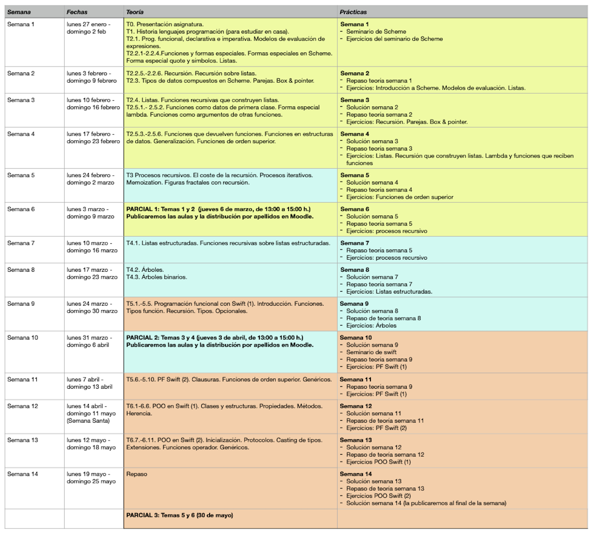

Lenguajes y Paradigmas de Programación¶
1. Datos académicos de la asignatura¶
Departamento de Ciencia de la Computación e Inteligencia Artificial
6 créditos ECTS: 1 clase de teoría de 2 h. y 1 clase de
prácticas de 2 h. a la semana
Profesores:
- Antonio Botía
- Domingo Gallardo (Coordinador)
- Francisco Martínez
- Cristina Pomares
2. Recursos de la asignatura¶
- Ficha de la asignatura
- Apuntes de la asignatura (teoría, seminarios y prácticas)
- Sitio Moodle abierto y accesible a toda la comunidad educativa, contiene los apuntes, transparencias, prácticas y otros materiales docentes.
- Foro de consultas y anuncios en el sitio Moodle.
3. Objetivos y competencias¶
Objetivos:
- ¿Qué elementos son comunes a los lenguajes de programación?
- ¿Qué familias o paradigmas de lenguajes podemos identificar?
- ¿Qué es la programación funcional?
- ¿Cómo es un lenguaje multi-paradigma que combina la programación funcional y la programación orientada a objetos?
Dominando estos contenidos será mucho más fácil aprender nuevos lenguajes de programación, identificar sus aspectos esenciales e incluso ser capaz de diseñar lenguajes específicos orientados a dominios concretos.
Competencias:
- Conocer y diferenciar las características de los distintos paradigmas de programación (programación funcional, procedural y orientada a objetos) e identificarlas en lenguajes de programación concretos.
- Diferenciar entre tiempo de ejecución y tiempo de compilación en distintos ámbitos: detección de errores o definición, creación o ámbito de vida de variables.
- Conocer los principios básicos de la programación funcional: recursión, inmutabilidad, funciones como objetos de primera clase, funciones de orden superior, expresiones lambda (clausuras).
- Conocer los problemas derivados del uso de la mutación en los lenguajes de programación imperativos y la forma de trabajar con estructuras inmutables en lenguajes declarativos y funcionales.
- Utilizar la abstracción y la recursión para diseñar correctamente procedimientos y estructuras de datos (listas y árboles).
- Ser capaz de diseñar, implementar y corregir programas funcionales, en concreto utilizando el lenguaje de programación Scheme.
- Ser capaz de diseñar, implementar y corregir programas funcionales, en concreto utilizando el lenguaje de programación Swift.
- Conocer las características de programación orientada a objetos y de comprobación estática de tipos del lenguaje de programación Swift. Conocer el uso de genéricos y protocolos que proporciona el lenguaje.
- Ser capaz de implementar programas en Swift en los que se utilicen sus características de programación orientada a objetos, genéricos y protocolos.
4. Temario¶
4.1. Bloques temáticos¶
La asignatura se divide en 3 bloques temáticos, todos ellos de igual duración, en los que se utilizará el lenguaje de programación que aparece entre paréntesis:
- Programación funcional (Scheme): temas 1 y 2
- Procesos y estructuras recursivas (Scheme): temas 3 y 4
- Programación funcional en Swift y programación orientada a objetos (Swift): temas 5 y 6
Los lenguajes de programación se introducirán mediante seminarios impartidos en las clases de prácticas.
- Seminario 1. El lenguaje de programación Scheme: Primitivas. Tipos de datos básicos. Símbolos. Cadenas. Listas. Definición de funciones.
- Seminario 2. El lenguaje de programación Swift. Intérprete y scripts. Tipos de datos básicos. Operadores. Estructuras de control. Ámbito de variables. Tipos de datos compuestos: tuplas, arrays y colecciones. Recorriendo colecciones. Valores mutables e inmutables. Inicialización. Tipos de referencia y valor en Swift.
4.2. Temas¶
- Tema 1. Lenguajes de programación: Historia de los lenguajes de programación. Elementos de los lenguajes de programación. Abstracción. Paradigmas de programación. Compiladores e intérpretes.
- Tema 2. Programación Funcional: Características e historia del paradigma de Programación Funcional. Diferencias con el paradigma imperativo. Características declarativas del paradigma funcional. Definición de funciones. Funciones como datos de primer orden. La forma especial lambda. Ámbito de variables y clausuras. Datos compuestos en Scheme: parejas. Construcción, recorrido y operaciones sobre listas. Listas con elementos compuestos. Listas de listas.
- Tema 3. Procedimientos recursivos: Diseño de funciones recursivas. Recursión mutua. Procesos recursivos e iterativos. Memoization. Recursión y gráficos de tortuga.
- Tema 4. Estructuras recursivas: Estructuras de datos recursivas: listas estructuradas y árboles.
- Tema 5. Programación funcional en Swift: Lenguajes multiparadigma. Programación funcional en Swift. Valores opcionales. Listas. Recursión pura y recursión por la cola. Funciones como datos de primer orden. Clausuras y funciones anónimas. Funciones de orden superior: mappings y filtros de colecciones.
- Tema 6. Programación Orientada a Objetos en Swift: Características e historia del paradigma de Programación Orientada a Objetos. Estructuras y clases en Swift. Herencia. Conceptos avanzados de POO en Swift: Extensiones, Protocolos y Genéricos.
El calendario de temas, prácticas y exámenes se puede ver en la siguiente figura.

5. Prácticas¶
Las prácticas son fundamentales en la asignatura y sirven para comprender, trabajar y profundizar los conceptos y competencias estudiados en las clases de teoría.
Para el desarrollo de las prácticas utilizaremos los siguientes lenguajes de programación y entornos de desarrollo:
- Racket (versión de Scheme, lenguaje de programación funcional)
- Swift (lenguaje multiparadigma creado por Apple, con conceptos modernos de programación funcional y programación orientada a objetos)
Cada semana tendrás que realizar una hoja de ejercicios en la que se incluirán 5 o 6 pequeños problemas de programación relacionados con la teoría de la semana anterior.
La hoja de ejercicios estará disponible al comienzo de la semana y tendrás toda la semana para su realización. Una vez entregada la práctica podrás acceder a su solución.
Revisa la solución de la práctica
Es muy importante que revises la solución de la práctica y la compares con la solución que has obtenido. Pregunta a tu profesor de prácticas en caso de que tengas dudas sobre si tu solución es correcta.
En la clase de prácticas se resolverán dudas sobre la solución de la práctica anterior y se trabajará en la hoja de ejercicios publicada esa semana. Durante la sesión de prácticas el profesor estará disponible para resolver dudas y dar pistas sobre cómo atacar los problemas.
También durante la semana se podrán consultar las dudas que puedan surgir en el foro de la asignatura (en Moodle) y con tutorías a los profesores. Es preferible el foro, porque de esta forma las contestaciones y aclaraciones serán compartidas con el resto de compañeros.
6. Horarios¶
La distribución de grupos del curso 2023-24 es la siguiente:

En los turnos de teoría es posible, de forma excepcional, asistir a un grupo distinto del asignado.
En los turnos de prácticas se debe asistir al grupo al que se ha asignado. El cambio de turno deberá solicitarse en la Secretaría de la EPS.
7. Evaluación¶
7.1. Convocatoria ordinaria C3 (evaluación continua)¶
La asignatura se divide en 3 bloques temáticos, todos ellos de igual duración, en los que se utilizará el lenguaje de programación que aparece entre paréntesis:
- Programación funcional (temas 1 y 2, Scheme)
- Recursión y estructuras de datos recursivas (temas 3 y 4, Scheme)
- Programación funcional en Swift y programación orientada a objetos (temas 5 y 6, Swift)
Se realizarán tres exámenes parciales escritos sobre los conceptos de cada uno de los bloques temáticos (teoría y práctica). Los parciales tendrán la siguiente ponderación en la nota final:
- Parcial 1: 35%
- Parcial 2: 30%
- Parcial 3: 35%
No se exige nota mínima en ninguno de los parciales. Los parciales 1 y 2 se realizarán durante el curso. El parcial 3 se realizará en la fecha del examen oficial de la convocatoria ordinaria de la asignatura.
Sobre los dispositivos móviles
Durante la realización de los exámenes no está permitido que llevéis encima ningún dispositivo con conexión a internet (smartphones, smart watches, tablets, etc). Antes de empezar la prueba, se deberán dejar dentro de las mochilas, y éstas en el suelo. En caso de no cumplir alguna esta norma, la prueba queda invalidada con calificación de 0.
7.2. Convocatoria extraordinaria C4¶
En la convocatoria extraordinaria se realizará un examen final sobre todos los bloques temáticos cuya calificación representará el 100% de la nota de la asignatura.
8. Consejos para aprender con éxito los contenidos de la asignatura¶
El consejo fundamental para aprobar la asignatura es trabajar todas las semanas e intentar seguir el ritmo de la asignatura. Los conceptos de la asignatura se van construyendo de forma progresiva y lo visto en una semana depende muchas veces de lo aprendido en semanas anteriores.
¿Cómo estudiar estos conceptos? Con la excepción de algunos temas y apartados concretos (como la historia de los lenguajes de programación o las características de los distintos paradigmas) la asignatura es fundamentalmente práctica. Cuando hablamos de estudiar los ejemplos de código queremos decir entenderlos, no aprenderlos de memoria. No tiene sentido aprender de memoria los ejercicios y los ejemplos vistos en clase. Hay que trabajarlos. Eso significa que, primero, hay que entenderlos sobre el papel y muy importante hay que probar todos los ejemplos en el intérprete. Y probar significa escribir los ejemplos y jugar con ellos, proponiendo pequeñas variantes, preguntándose ¿qué pasaría si...? y probándolo.
En cuanto a las prácticas y a los ejercicios propuestos es fundamental pelearse con ellos e intentar hacerlos por uno mismo sin ver ninguna solución. Es la única forma de aprender: probando, equivocándose y encontrando la solución por uno mismo.
A la hora de enfrentarse con un problema es fundamental también usar lápiz y papel para probar enfoques y encontrar la solución más sencilla sobre el papel antes de probarla en el intérprete. Los ejercicios que proponemos no son excesivamente complicados. Todos se resuelven con muy pocas líneas de código y su codificación en el ordenador no tiene dificultad, una vez que se ha encontrado la solución que lo resuelve. Al usar el lápiz y papel también estarás practicando una situación similar a la que te vas a encontrar en los exámenes de la asignatura.
Resumiendo: trabajar todas las semanas, hacer uno mismo todos los ejercicios y no desanimarse ni descolgarse.
Son muy interesantes algunos comentarios de antiguos estudiantes que han aprobado la asignatura.
Cómo dominar los conceptos
Para superar la asignatura lo que hice fue estudiar mucho. Hay que practicar y sobre todo entender los ejercicios y no sabérselos de memoria. Una vez dominados los ejercicios yo mismo me propuse variantes de los mismos. Así es como se domina.
El problema del cambio de paradigma
El problema principal de la asignatura es enfrentarse a un cambio del paradigma de programación."
Trabajar día a día
Lo que hice fue tratar de llevar al día toda la asignatura, además de trabajar con material adicional para poder ampliar y profundizar conocimientos. LPP es una asignatura de fondo en la que tienes que mantener el ritmo de trabajo de principio a fin de cuatrimestre."
No copiar las prácticas
El mayor problema que creo que existe es que muchas personas se relajan y se copian las prácticas en cuanto les resultan un poco difíciles o les lleva algo mas del tiempo que les gustaría. Esta asignatura si no haces tu los ejercicios y te peleas con ellos es prácticamente imposible de sacar.
No memorizar
Otra de las cosas es que tienes que cambiar la forma de estudiar, no vale memorizar, ni hacer muchos ejercicios sin más. Tienes que entender bien el funcionamiento de la recursión para luego poder practicar con ejercicios, sino no sirve. [...] En mi opinión el problema de LPP para mucha gente es que para los exámenes se memorizan los ejercicios de prácticas de las soluciones que se dan en clase.
Plantearse uno mismo problemas
Los problemas que me encontré a la hora de cursar LPP fue que eran dos lenguajes completamente nuevos, otro tipo de programación que nunca había visto, otra forma de estudiar distinta. Para poder superarla simplemente tienes que hacer ejercicios y también plantearte tú mismo nuevos ejercicios.
9. Bibliografía¶
En Moodle se publican los apuntes de la asignatura, con ejercicios, explicaciones y ejemplos de todos los conceptos estudiados, tanto en teoría como en práctica.
Para ampliar algunos conceptos se recomiendan las siguientes referencias:
- Harold Abelson y Gerald Jay Sussman, Structure and Interpretation of Computer Programs, MIT Press, 1996
- Enlace a la edición on-line
- Signatura en la Biblioteca Politécnica: I.06/ABE/STR
- Apple, The Swift Programming Language
- The Racket Guide
Lenguajes y Paradigmas de Programación, curso 2023-24
© Departamento Ciencia de la Computación e Inteligencia Artificial, Universidad de Alicante
Domingo Gallardo, Cristina Pomares, Antonio Botía, Francisco Martínez